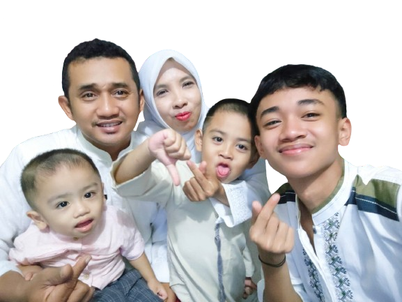

Undangan Khitan

Tasyakuran Khitan
Kholilurrohman Ilyasa & Raffasya Al Fariq
Putra dari Bpk. Entis Sutisna, SE & Ibu Enie Dinatu Shalihat, S.Kep
Rasulullah SAW Bersabda :
“Nabi Ibrahim as. berkhitan pada usia 80 (delapan puluh) tahun dengan menggunakan qadum”. (HR Muslim).
“Sunnah fitrah yang lima adalah khitan (sunat), istihdad (mencukur rambut kemaluan), memotong kuku, mencukur kumir, dan mencabut rambut ketiak” (HR. Bukhari 5889, Muslim 257).
Assalamualaikum wr wb
Dengan izin Allah SWT, dan dengan penuh kerendahan hati, kami bermaksud mengundang Bapak/Ibu/Saudara/i untuk berkenan hadir dalam acara Syukuran Khitan anak kami.
Hari & Tempat
Minggu, 5 Mei 2024
Pukul 09.00 WIB - Selesai
Jl. Raya Cibeber, Al-Hikmah RT. 02/RW.02 Desa Cibeber 1 Leuwiliang - Bogor
Petunjuk arah

Kami Yang Berbahagia Keluarga Besar
Kholilurrohman Ilyasa & Raffasya Al Fariq
Atas kehadiran dan doa restunya kami ucapkan terima kasih
Wassalamu’alaikum Wr. Wb.